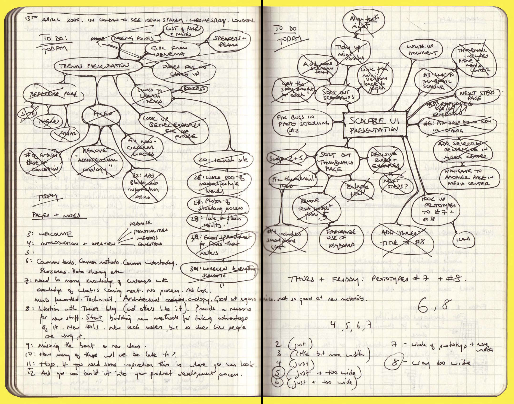

HCI:
Sketching
2025-02-18
Week SIX
Today
- Microinteraction example
- Figma Tutorial (Ishwari)
- Q and A from last time
- Design Critique (Julia Lee)
- Sketching
- Norman (2023) ?
Microinteraction example, animate it!

Discussion
Metaphors beyond visual cues
How can UX designers use metaphors beyond mere visual cues? Mental shortcuts … enriching usability but also promoting sustainable practices …
What does design mean to you?
(a question we have to keep asking ourselves)
Feedback
How can the design team effectively gather and synthesize user feedback?
Validity
Given the subjective nature of user feedback and potential biases inherent in self-report measures, to what extent can the results obtained from such studies be considered reliable and valid?
Top-down design
Can we also say that the initial phase of top down design is not user centered?
(Example: Apple Vision Pro)
Continuous innovation
What are some methods or strategies you could implement to ensure continuous innovation?
Ahead of the wave, yet riding the crest
How can designers innovate to stay ahead of current trends, while ensuring that their technology catches on and becomes mainstream?
Values inherent in top-down and bottom-up design
Would you expect a workspace using a specific approach to hold certain values? If yes, what values do you would you expect?
Drivers of top-down design
The article says ‘Top-down design is heavily driven by domain knowledge’, while I think top-down design is more driven by technology. How do you understand this question?
Sketching
typical user-centered design stages
- Contextual Inquiry (also known as user research)
- Personas (also known as modeling)
- Scenarios (also known as storyboarding)
- Lofi Prototypes (also known as sketches—our subject today)
- Hifi Prototypes (I include midfi in this category)
- Handoff to developers
Design is all about constraints.
— Charles Eames
lofi from Buxton (2007)

My drawings have been described as pre-intentionalist, meaning that they were finished before the ideas for them had occurred to me. I shall not argue the point.
— James Thurber
Sketching capabilities from Buxton (2007)

lofi and hifi from Buxton (2007)


Norman (2023), Human Behavior
Why change is difficult
- Changing beliefs takes time: Women’s suffrage took from 1848 to 1920
- Emotion is as powerful as reason
- People respond to disasters but don’t prevent them
- Climate change and pandemics exemplify slowness of response
- Successful actions often show no visible result
People will mobilize for a common goal
- People mobilize for war, why not against climate change or pandemics?
- 44m people believe the US gov’t is secretly controlled by Satanist pedophiles
- Many people disbelieve scientists and rely on con men
- These are barriers to change
What must change?
- Balance between work and family, rooted in the origins of the industrial revolution
- Changing from a job to an occupation
- Education: becoming flexible (Don’t Look Up, 2021)
- Grades for students (switch to pass / fail)
- Politics (book was written in 2023)
- Reward structures (industry and academia have bad ones)
Dominance of technology
- Treating people as servants of machines
- Tech-centered approach treats human virtues as deficits
- Focus, curiosity, mind wandering, mental addiction
Future of technology
- It’s hard to predict things, especially the future (Yogi Berra)
- Miniaturization
- Energy
- Biotech
- Money
- Intelligence Amplification
Readings
Readings last week include Hartson and Pyla (2019): Ch 9, 10
Readings this week include Hartson and Pyla (2019): Ch 12, 13, 14
Assignments
Project 2
References
END
Colophon
This slideshow was produced using quarto
Fonts are League Gothic and Lato